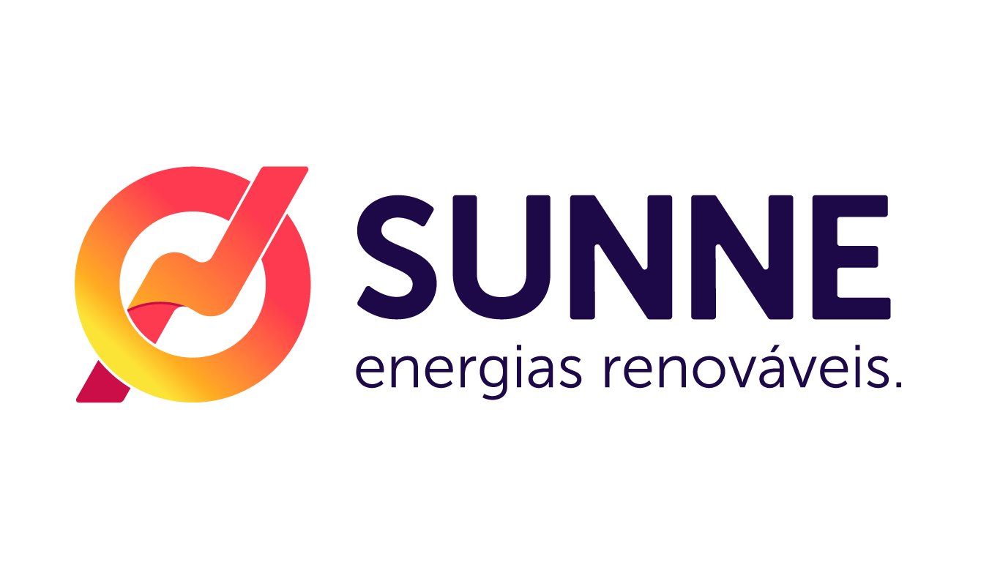

<mat-sidenav-container class="sidenav-container">
  <mat-sidenav #drawer class="sidenav" fixedInViewport
      [attr.role]="(isHandset$ | async) ? 'dialog' : 'navigation'"
      [mode]="(isHandset$ | async) ? 'over' : 'side'"
      [opened]="(isHandset$ | async) === false">
    <mat-toolbar>
      
    </mat-toolbar>
    <mat-nav-list routerLink="/home">
      <a mat-list-item>
        <mat-icon aria-hidden="false" aria-label="space_dashboard icon">space_dashboard</mat-icon>Dashboard
      </a>

    </mat-nav-list>
    <mat-nav-list routerLink="/bookList">
            <a mat-list-item>
        <mat-icon aria-hidden="false" aria-label="view_list icon">view_list</mat-icon> Livros
      </a>
    </mat-nav-list>
    <mat-nav-list routerLink="/addBook">
      <a mat-list-item>
        <mat-icon aria-hidden="false" aria-label="space_dashboard icon">book</mat-icon>Alugar Livro
      </a>
    </mat-nav-list>
  </mat-sidenav>
  <mat-sidenav-content>
    <mat-toolbar color="primary" style="display:flex; justify-content: space-between; text-align: end">
      <button
        type="button"
        aria-label="Toggle sidenav"
        mat-icon-button
        (click)="drawer.toggle()"
        *ngIf="isHandset$ | async">
        <mat-icon aria-label="Side nav toggle icon">menu</mat-icon>
      </button>
      <span>SUNNE ACADEMY</span>
    </mat-toolbar>
    <ng-content></ng-content>
  </mat-sidenav-content>
</mat-sidenav-container>
